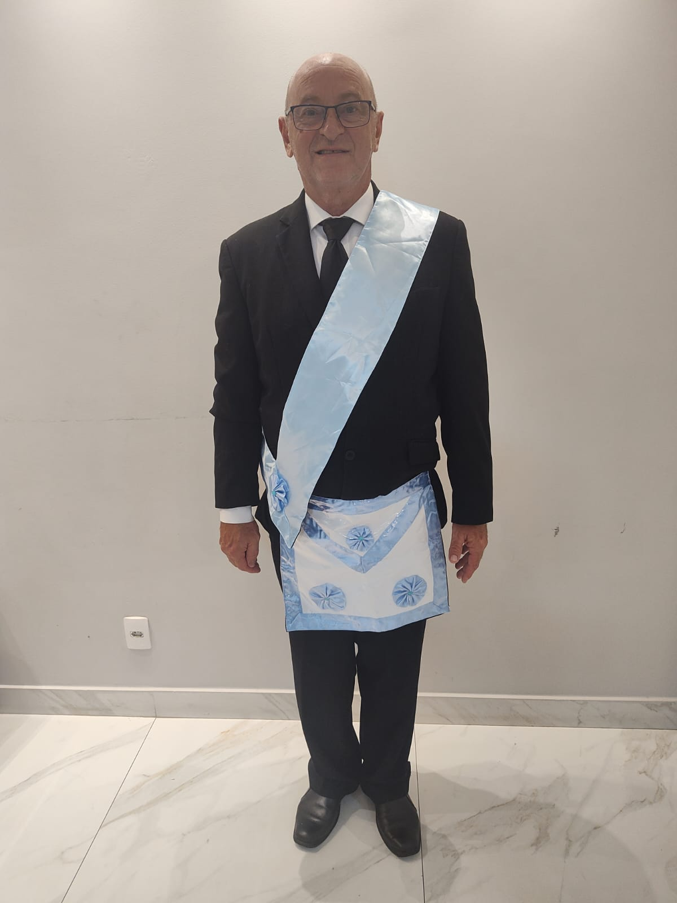
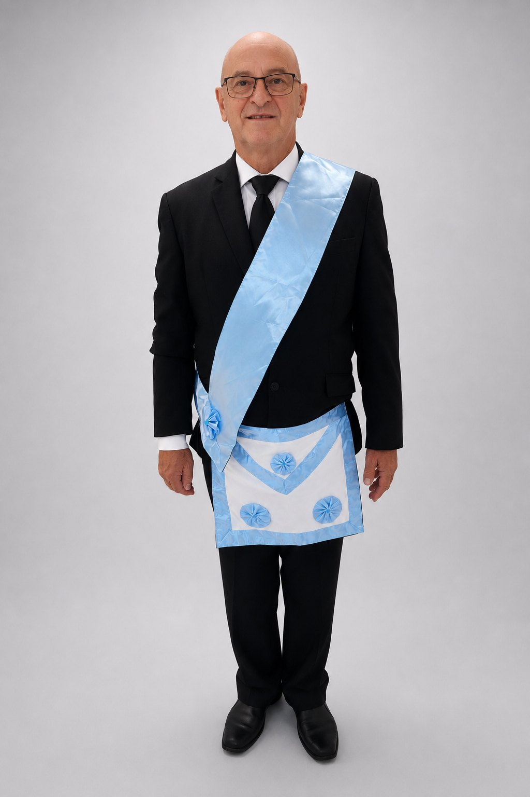
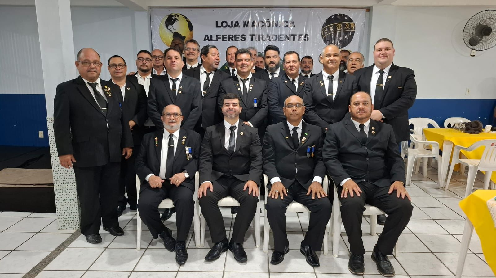
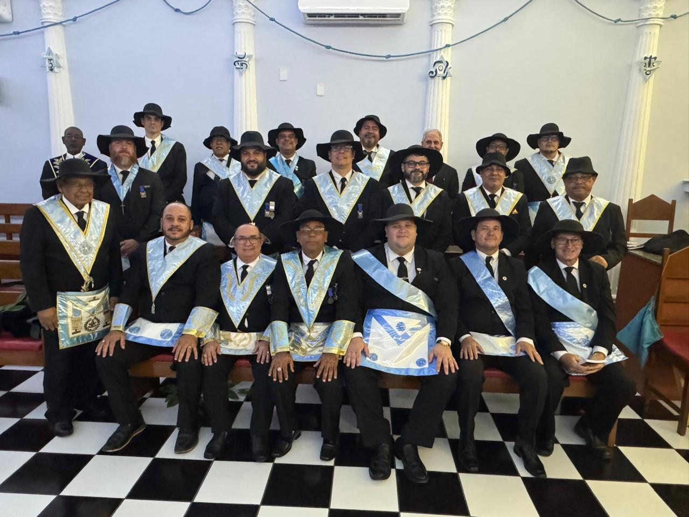
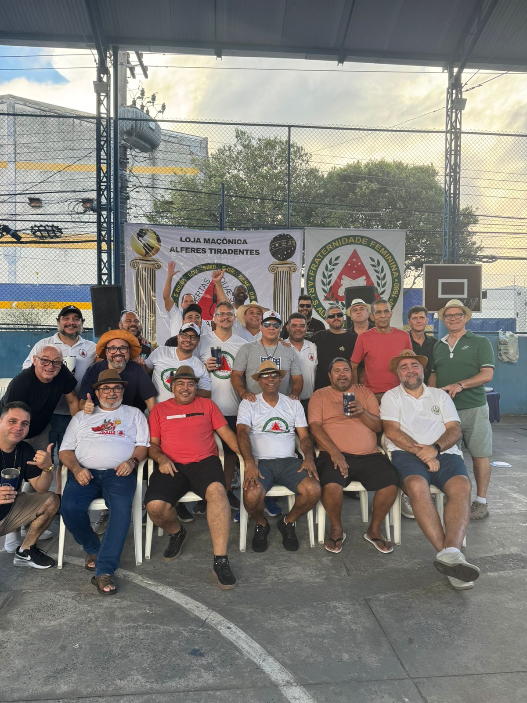
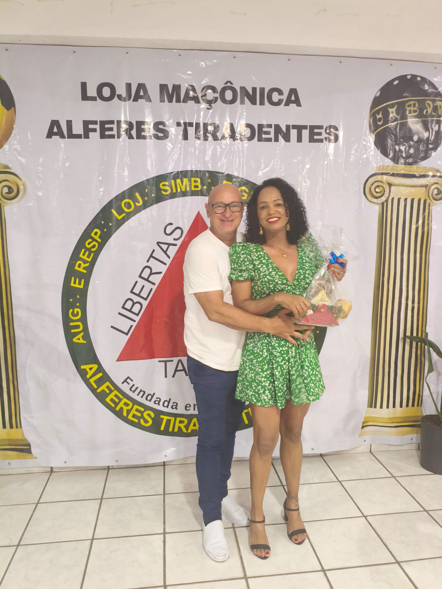

Minha história como maçom.
Uma trajetória de aprendizado, fraternidade e compromisso, marcada pela elevação de Nelson Model a Mestre Maçom na Loja Maçônica Alferes Tiradentes.
Uma caminhada de construção
Minha história na Maçonaria é feita de convivência, estudo e aperfeiçoamento constante. Cada etapa trouxe novos ensinamentos, responsabilidades e laços fraternos. A elevação a Mestre Maçom representa um marco nessa caminhada e renova o compromisso de seguir aprendendo, servindo e construindo.

Uma história transformada em miniatura
A representação pessoal, as vestes e os detalhes desta etapa foram reunidos em uma peça exclusiva. Mais que um objeto, a miniatura M002 preserva uma conquista e conecta a lembrança física a esta história digital.
Fraternidade em momentos




“Que esta nova etapa seja conduzida pela sabedoria, pela fraternidade e pelo compromisso com os princípios que orientam nossa caminhada.”